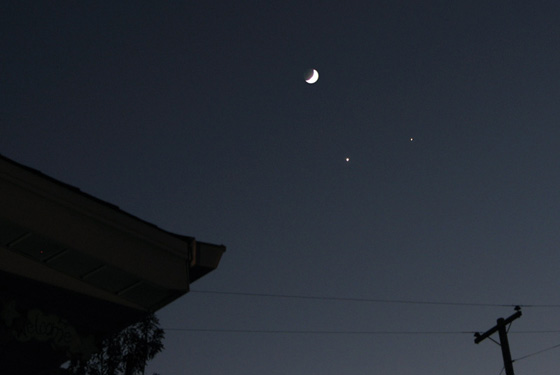

The Moon-Venus-Jupiter Conjunction of December 01, 2008  Venus is on the left, Jupiter on the right. Notice the Earthshine, barely visible on this shot. Cheers!
alex December 2, 2008 at 8:07 pm Why didn’t you take the photo a day earlier for the moon with the smiling face?
Mike Lee December 27, 2008 at 11:11 am Wow, great shot! Crisp, clear, and looks damn professional. You oughta use your mad skillz for the January Quadrantids meteor showers on 1/3 – 1/4! ;-)
Why didn’t you take the photo a day earlier for the moon with the smiling face?
Wow, great shot! Crisp, clear, and looks damn professional. You oughta use your mad skillz for the January Quadrantids meteor showers on 1/3 – 1/4! ;-)
Why the sad face ???